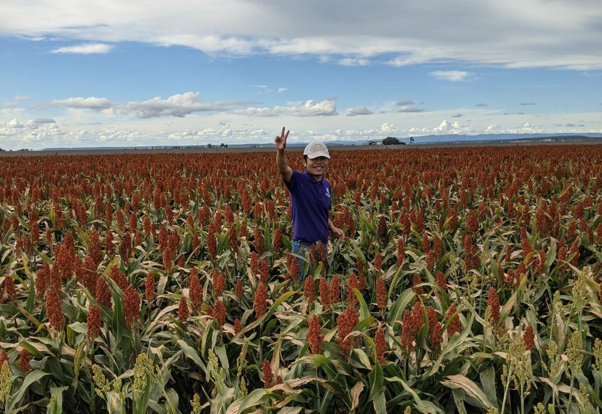

News
Find more events that I attended, please select this detailed event table!
Career Update
On 01/08/2025, Patrick started his Doctor of Philosophy at the CQUniversity Australia, supported by the Australian Government Department of Education National Industry PhD Program, Freelance Robotics and CQUniversity International Excellence Research Scholarship.
On 28/07/2025, Patrick resigned his job as a Cropping Engagement and Adoption Officer at Katherine, Northern Territory.
On 28/03/2022, the research paper had been officially published, click here to read about impact of roadside burning on genetic diversity in a high-biomass invasive grass.
Recent Projects
The following research projects were associated with his work at the University of Queensland, and listed chronologically:
2020-2021 Casual Research Assistant
1) INVITA: A technology and analytics platform for improving variety selection (Project ID: UOQ2003-011RTX)
2) CropPhen: Remote mapping of grain crop type and phenology, Enabling analytics for grain crop monitoring applications - Crop classification and mapping of phenological characteristics(Project ID: UOQ2002-010RTX)
3) High throughput feature extraction from imagery to map spatial variability (Project ID: UOQ2003-008RTX)
4) Subsoil constraint: Improving wheat yields on sodic soils (Project ID: GRDC UA00159)

📷 Credit: Alex Chamanmáh
2020 Winter Research Scholar
Do invasive plants change fire regimes in Australia? The genomic responses of buffel grass Cenchrus ciliaris L. to fire regimes in central Australia?
2020 Honours Student
Early-stage yield prediction in lettuce using analysis of images from unmanned aerial vehicles (UAVs)
2019 Undergraduate Student
Seed Germination Ecology of African Lovegrass [Eragrostis curvula (Schrad.) Nees]
Research
He is interested in a few topics related to remote sensing, precision agriculture, ecology.
Research Papers
- The impact of roadside burning on genetic diversity in a high-biomass invasive grass
Di, Binyin; Firn, Jennifer; Buckley, Yvonne M; Lomas, Kate; Pausas, Juli G; Smith, Annabel L
Evolutionary Applications , vol. 15, no. 5, pp. 790-803, 2022, https://doi.org/10.1111/eva.13369
Honours Thesis
- Early stage yield prediction in lettuce using analysis of images from unmanned aerial vehicles (UAVs)
Di, Binyin
Bachelor Honours Theisis, School of Agriculture and Food Sciences, The University of Queensland 2020, PDF
Awards
2024, Delegate to the 14th Australia-China Youth Dialogue in Adelaide from Friday, 22nd November to Monday, 25th November 2024.
2024, Finalist of Northern Territory Young Achiever Awards (Colemans Contracting & Earthmoving Agriculture Award and Glencore McArthur River Mining Regional and Rural Initiative Award)
2023, Crawford Fund Conference Scholarship
2020, UQ Employability Award
2020, UQ Science Leaders Award (UQ Science Leaders Academy)
2020, Winter Research Scholarship
2019, Leadership and Mentoring Program in Science
2019, Short Term Experience Travel Grant
Welcome to use this website's
source code. Full Emoji List can be found here
✩✢ The profile photo was taken by
Terry Cunningham from Canberra.
Patrick acknowledges Traditional Owners of Country throughout Australia and recognises the continuing connection to lands, waters and communities. He pays his respect to Aboriginal and Torres Strait Islander cultures; and to Elders past and present.
Powered by
w3.css
 ORCID
ORCID